Overview about colorizing grain boundaries
| On this page ... |
| The grain boundary |
| Visualizing special grain boundaries |
| Phase boundaries |
| Subboundaries |
| Misorientation |
| Classifying special boundaries |
Let's import some EBSD data and compute the grains.
close all mtexdata forsterite plotx2east ebsd = ebsd('indexed'); [grains,ebsd.grainId] = calcGrains(ebsd); % remove very small grains ebsd(grains(grains.grainSize<=5)) = []; % and recompute grains [grains,ebsd.grainId] = calcGrains(ebsd); % smooth the grains a bit grains =smooth(grains,4)
ebsd = EBSD
Phase Orientations Mineral Color Symmetry Crystal reference frame
1 151466 (82%) Forsterite light blue mmm
2 25635 (14%) Enstatite light green mmm
3 7306 (4%) Diopside light red 12/m1 X||a*, Y||b*, Z||c
Properties: bands, bc, bs, error, mad, x, y, grainId
Scan unit : um
grains = grain2d
Phase Grains Pixels Mineral Symmetry Crystal reference frame
1 426 151466 Forsterite mmm
2 200 25635 Enstatite mmm
3 142 7306 Diopside 12/m1 X||a*, Y||b*, Z||c
boundary segments: 33636
triple points: 1347
Properties: GOS, meanRotation
The grain boundary of a list of grains can be extracted by
gB = grains.boundary plot(gB)
gB = grainBoundary
Segments mineral 1 mineral 2
1355 notIndexed Forsterite
198 notIndexed Enstatite
36 notIndexed Diopside
13890 Forsterite Forsterite
10857 Forsterite Enstatite
5167 Forsterite Diopside
598 Enstatite Enstatite
1259 Enstatite Diopside
276 Diopside Diopside
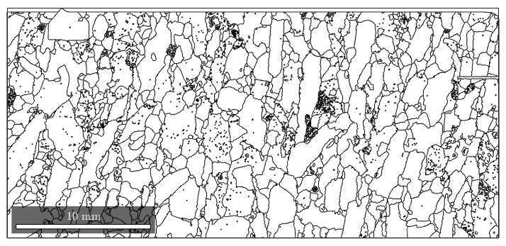 Accordingly, we can access the grain boundary of a specific grain by
grains(267).boundary plot(grains(267).boundary)
ans = grainBoundary
Segments mineral 1 mineral 2
304 Forsterite Forsterite
126 Forsterite Enstatite
97 Forsterite Diopside
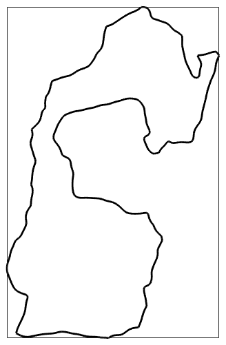 let's combine it with the orientation measurements inside
% define the colorcoding such that the meanorientation becomes white oM = ipdfHSVOrientationMapping(grains(267)); oM.inversePoleFigureDirection = grains(267).meanOrientation * oM.whiteCenter; oM.maxAngle = 5*degree; % get the ebsd data of grain 267 ebsd_931 = ebsd(grains(267)); % plot the orientation data hold on plot(ebsd_931,oM.orientation2color(ebsd_931.orientations)) hold off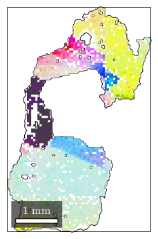
For a multi-phase system, the location of specific phase transistions may be of interest. The following plot highlights all Forsterite to Enstatite phase transitions
close all plot(grains,'faceAlpha',.3) hold on plot(grains.boundary('Fo','En'),'linecolor','r','linewidth',1.5) hold off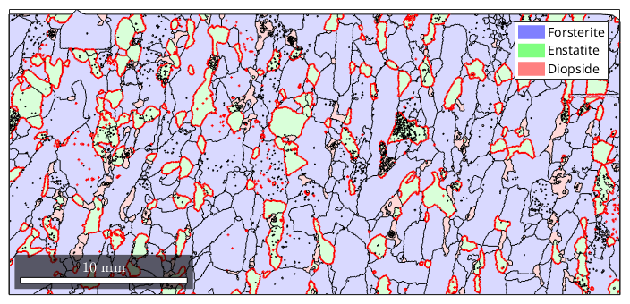
Another type of boundaries is boundaries between measurements that belong to the same grain. This happens if a grain has a texture gradient that loops around these two measurements.
close all plot(grains.boundary) hold on plot(grains.innerBoundary,'linecolor','r','linewidth',2)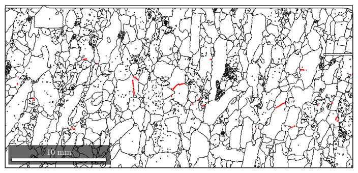
Basically there are two ways to visualize misorientations along the grain boundary. The simplest way is to colorize the grain boundaries with respect to the misorientation angle.
close all gB_Fo = grains.boundary('Fo','Fo'); plot(grains,'translucent',.3,'micronbar','off') legend off hold on plot(gB_Fo,gB_Fo.misorientation.angle./degree,'linewidth',1.5) hold off mtexColorbar('title','misorientation angle')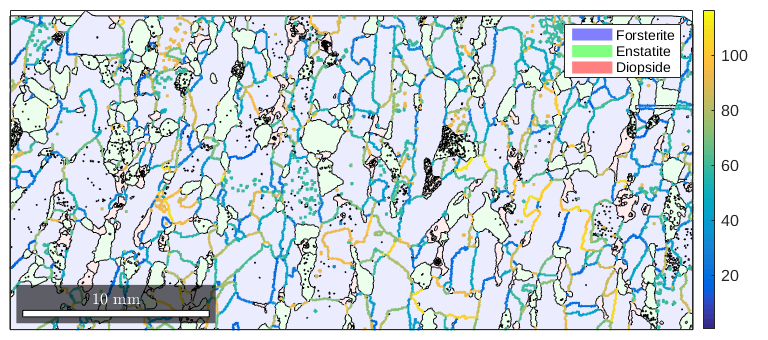
The more sophisticated way is to colorize the misorientation space and apply the color to the respective grain boundaries.
close all plot(grains,'translucent',.3,'micronbar','off') legend off hold on % this reorders the boundary segement a a connected graph which results in % a smoother plot gB_Fo = gB_Fo.reorder; oM = patalaOrientationMapping(gB_Fo); plot(gB_Fo,'linewidth',4) % on my computer setting the renderer to painters gives a much more % pleasent result set(gcf,'Renderer','painters') hold on plot(gB_Fo,oM.orientation2color(gB_Fo.misorientation),'linewidth',2) hold off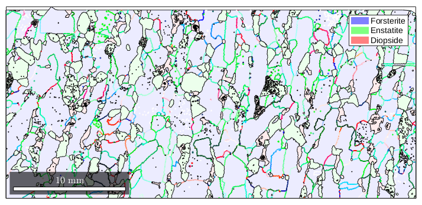
Lets visualize the color key as axis angle sections through the misorientation space
plot(oM)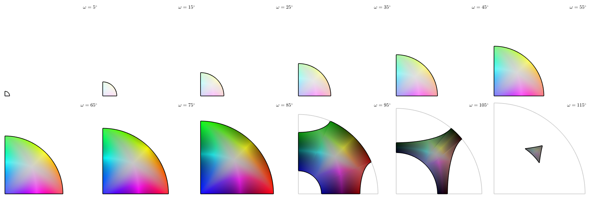
Actually, it might be more informative, if we classify the grain boundaries after some special property.
We can mark grain boundaries after its misorientation angle is in a certain range
close all
mAngle = gB_Fo.misorientation.angle./ degree;hist(mAngle) [~,id] = histc(mAngle,0:30:120);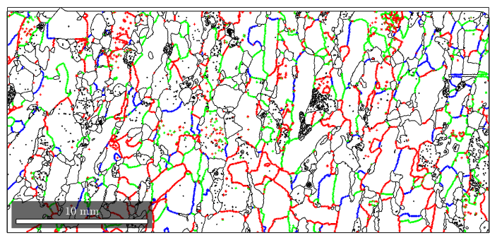
plot(gB,'linecolor','k') hold on plot(gB_Fo(id==1),'linecolor','b','linewidth',2,'DisplayName','>40^\circ') plot(gB_Fo(id==2),'linecolor','g','linewidth',2,'DisplayName','20^\circ-40^\circ') plot(gB_Fo(id==3),'linecolor','r','linewidth',2,'DisplayName','10^\circ-20^\circ') plot(gB_Fo(id==4),'linecolor','y','linewidth',2,'DisplayName','< 10^\circ') hold off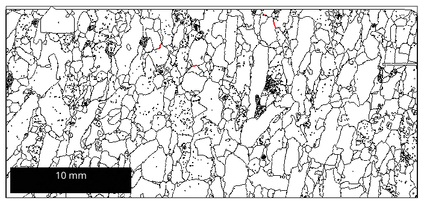
Or we mark the rotation axis of the misorientation.
close all plot(gB) hold on ind = angle(gB_Fo.misorientation.axis,xvector)<5*degree; plot(gB_Fo(ind),'linecolor','b','linewidth',2,'DisplayName','[100]')
Warning: Symmetry mismatch Warning: Symmetry mismatch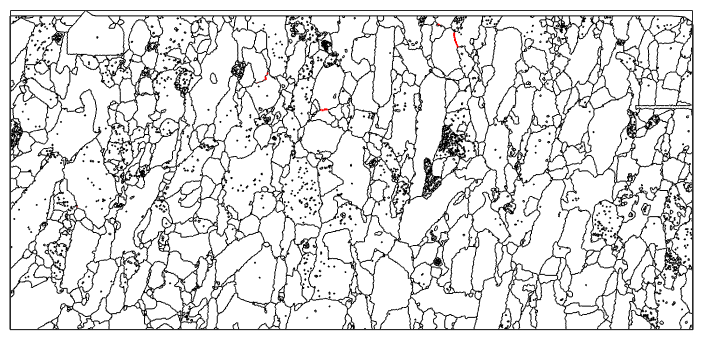
Or we mark a special rotation between neighboured grains. If a linecolor is not specified, then the boundary is colorcoded after its angular difference to the given rotation.
rot = rotation('axis',vector3d(1,1,1),'angle',60*degree); ind = angle(gB_Fo.misorientation,rot)<10*degree; close all plot(gB) hold on plot(gB_Fo(ind),'lineWidth',1.5,'lineColor','r') legend('>2^\circ','60^\circ/[001]')
Warning: Ignoring extra legend entries.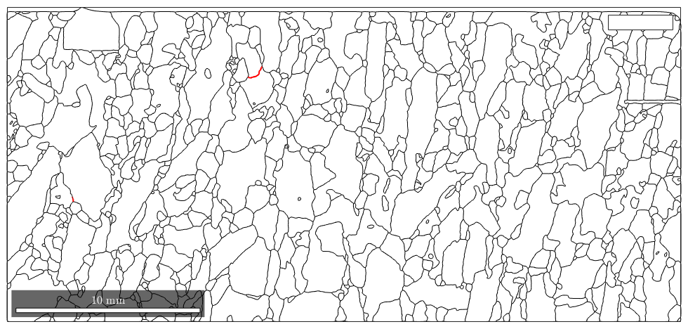
Another kind of special boundaries is tilt and twist boundaries. We can find a tilt boundary by specifying the crystal form, which is tilted, i.e. the misorientation maps a lattice plane 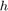 of on grain onto the others grain lattice plane.
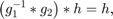
where 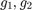 are neighbored orientations. TODO
%close all %plot(grains.boundary) %hold on %plot(grains.boundary,'property',Miller(1,1,1),'delta',2*degree,... % 'linecolor','r','linewidth',1.5) %plot(grains.boundary,'property',Miller(0,0,1),'delta',2*degree,... % 'linecolor','b','linewidth',1.5) % %legend('>2^\circ',... % '\{111\}',... % '\{001\}')
| DocHelp 0.1 beta |